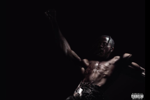

Artist: Travis Scott
Just come outside for the night (Yeah)
Take your time, get your light (Yeah)
Johnny Dang, yeah, yeah
I been out geekin' (Bitch)
[Chorus: Travis Scott]
FE!N, FE!N, FE!N, FE!N, FE!N (Yeah)
FE!N, FE!N, FE!N, FE!N, FE!N (Yeah)
FE!N, FE!N, FE!N, FE!N, FE!N
FE!N, FE!N (Yeah), FE!N, FE!N, FE!N
[Verse 1: Travis Scott & Sheck Wes]
The career's more at stake when you in your prime (At stake)
Fuck that paper, baby, my face on the dotted line (Dot, yeah)
I been flyin' out of town for some peace of mind (Yeah, yeah, bitch)
It's like always they just want a piece of mine (Ah)
I been focused on the future, never on right now (Ah)
What I'm sippin' not kombucha, either pink or brown (It's lit)
I'm the one that introduced you to the you right now (Mmm, let's go)
Oh my God, that bitch bitin' (That bitch bitin')
Well, alright (Alright), tryna vibe (I'm tryna vibe this)
In the night, come alive
Ain't asleep, ain't a—, ain't a—, ain't-ain't
[Chorus: Travis Scott]
FE!N, FE!N, FE!N, FE!N, FE!N
FE!N, FE!N, FE!N, FE!N, FE!N
FE!N, FE!N, FE!N, FE!N, FE!N
FE!N, FE!N, FE!N, FE!N
FE!N, FE!N, FE!N, FE!N, FE!N
[Bridge: Playboi Carti]
Syrup, woah, what?
What?
(Homixide, Homixide, Homixide, Homixide)
What? (Yeah)
Woah, woah (Yeah, yeah)
(Homixide, Homixide, Homixide, Homixide)
Hit, yeah, hold up (Yeah)
[Verse 2: Playboi Carti]
Yeah, I just been poppin' my shit and gettin' it live, hold up (Shit)
Yeah, you try to come wrong 'bout this shit, we poppin' your tires, hold up (Shit)
Uh, hundred-round (Woah), feelin' like I'm on ten
Playin' both sides with these hoes (Hold up), shawty, I'm fuckin' your friend (Hold up)
I've been goin' crazy, shawty, I've been in the deep end
She not innocent, uh, she just tryna go
[Chorus: Travis Scott & Playboi Carti]
FE!N (Talkin' 'bout), FE!N, FE!N (Yeah), FE!N, FE!N (Syrup, oh, oh, what? Syrup)
FE!N, FE!N (Syrup), FE!N, FE!N, FE!N (Oh, oh)
FE!N, FE!N (Talkin' 'bout), FE!N, FE!N, FE!N, FE!N (Talkin' 'bout, let's go)
[Verse 3: Playboi Carti & Travis Scott]
I just been icin' my hoes, I just been drippin' my hoes (Drippin' my hoes)
This is a whole 'nother level, shawty (Oh), I got these hoes on they toes (Hoes on they toes)
I put the bitch on the road, she tryna fuck on the O, hold up, hold up
I got this ho with me, she tryna show me somethin', hold up, hold up (Oh)
I got flows for days, these niggas ain't on nothin', hold up, yeah (Oh)
Me and my boy locked in, you know we on one, hold up, uh (Slatt, slatt)
We in the spot goin' crazy until the sun up
You worried about that ho, that ho done chose up (Slatt, bitch-ass)
Uh, pistols all in the kitchen, can't give the zip code up, hold up, yeah (Wow)
FE!N, FE!N, FE!N (Huh? Huh? Huh? Huh? Yeah)
Why the fuck these niggas actin' like they know us?
Double O, Cactus, yeah, we towed up (Skrrt, skrrt), uh, yeah
Switch out the bag, these niggas get rolled up, hold up (It's lit), slatt
Everything hit, hold up, everything Homixide, Homixide (Homixide, Homixide, Homixide, Homixide)